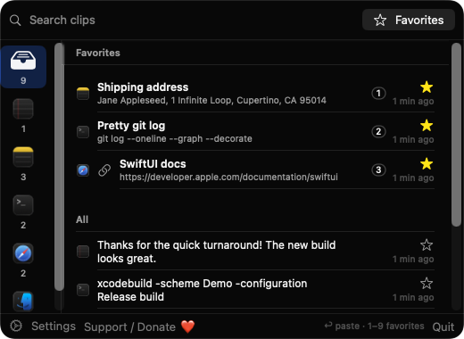
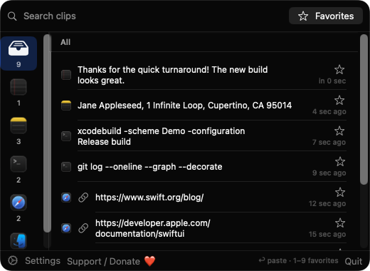
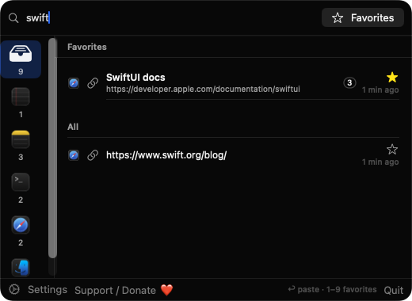
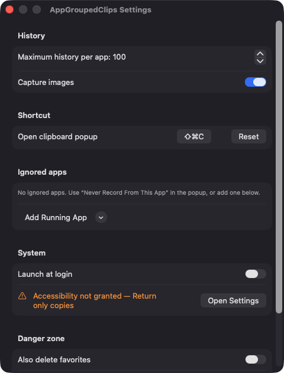

Grouped by source app
Each clip is saved with the name and icon of the frontmost app. Browse by app in the sidebar, or choose All for a merged timeline.
Open source · macOS 14+ · Universal binary · Clipboard
AppGroupedClips keeps your copy history organized by the app each clip came from. Press ⇧⌘C from anywhere, pick a clip, and press Return to paste it into the app you were using.
Free & MIT licensed · Apple Silicon & Intel · Latest release

Features
Every copy is filed under the app it came from, so history stays easy to scan.
Each clip is saved with the name and icon of the frontmost app. Browse by app in the sidebar, or choose All for a merged timeline.
Star a clip or use Rename Label to name it, such as Billing address. Labelled clips are kept as favorites and are not removed by history limits.
Return pastes the selected clip into the previous app. Number keys 1 to 9 paste your first nine favorites. Typing starts a search.
Records plain text, links, images and copied files. Search matches both clip text and favorite labels.
Clips marked concealed or transient, such as those from password managers, are skipped. You can also choose Never Record From an app.
Set history per app from 20 to 500, turn image capture off, manage ignored apps, record your own hotkey and enable launch at login.
Screenshots



Install
AppGroupedClips is open source and not notarized with a paid Apple Developer ID, so macOS needs one extra step the first time.
xattr -cr /Applications/AppGroupedClips.app
Download
Free, forever. Built for macOS 14 Sonoma or newer, Apple Silicon and Intel.
Not notarized: on first launch right-click AppGroupedClips.app → Open.
FAQ
Yes. It is released under the MIT license and the full source is on GitHub. There are no accounts, subscriptions or paid tiers. If you find it useful, there is an optional Support button in the app.
Only Accessibility, and only so it can send a Command-V key event to paste into the previous app. Without it, the clip is still copied to your clipboard and a notice explains how to enable the permission.
Locally on your Mac. History is a JSON file in ~/Library/Application Support/AppGroupedClips, with images saved as separate files. Nothing is sent anywhere, and the app has no analytics or network code.
Notarization requires a paid Apple Developer account, which this free project does not have. Right-click the app and choose Open once to launch it, or build it yourself from source with Xcode.
Support ❤️
AppGroupedClips is a free, open-source alternative to paid utilities. If it earns a spot on your Mac, a coffee keeps the updates coming.
☕ Support Or on Ko-fi